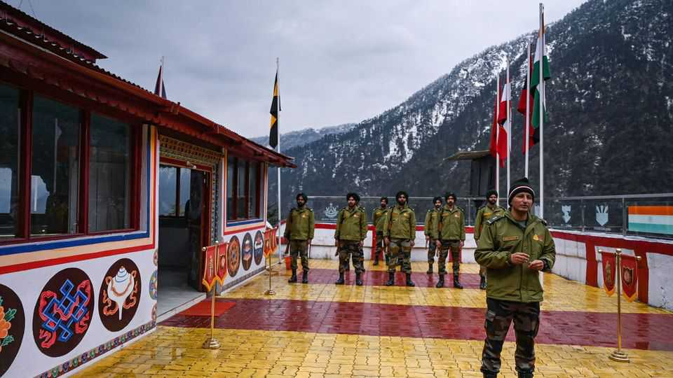
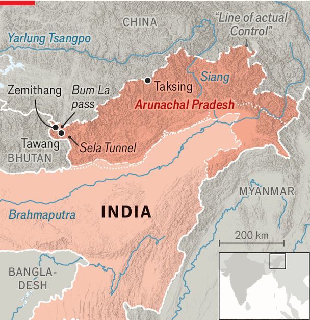

India is pouring money and concrete into its border with China
Can roads and villages secure a state that China claims?

Oct 22nd 2026
JUST 10km from India’s north-eastern border with China, the village of Zemithang lies in the heart of territory claimed by the Chinese. Everyday life feels unmistakably Indian. Locals chat in Hindi, listen to Bollywood songs and fly Indian flags. But occasionally there is an unwanted Chinese presence. “My phone keeps changing to Beijing time [two and a half hours ahead], because I lose my Indian network and pick up the Chinese one,” says a local official. His complaint captures the challenge facing India as it tries to transform its remote frontier, and match a massive infrastructure roll-out on the other side.
India is pouring concrete and money into Zemithang and other parts of Arunachal Pradesh (AP) to strengthen its hold over the Himalayan state. Home to fewer than 2m people, it is claimed by China, which calls it Zangnan, or southern Tibet. The state was also the main theatre of the only war between the two countries. In 1962 Chinese soldiers descended through the mountains, overran Indian forces and occupied parts of it. They eventually withdrew, but the defeat has ensured that relations have been edgy ever since.

Today the frontier is far calmer. The two armies face each other across the “line of actual control”, a disputed border that runs through spectacular mountains and valleys (see map). Barring a few scuffles, there has been no clash in AP since 1975. Even during hand-to-hand fighting in 2020 between Indian and Chinese troops in Galwan, 1,500km to the west, the border in AP remained quiet. But this is an ugly stability, says Ajai Shukla, a security analyst based in Delhi. The road to the border on the Indian side is lined with military camps: an estimated 90,000-120,000 troops are deployed in the region. In August local political groups alleged there had been Chinese intrusions near Taksing, in eastern AP, though India’s government dismissed the reports as rumours.
The fiercest contest is over infrastructure. For decades Indian officials eschewed building roads in AP, fearing it would give an invading Chinese army an easier route south. That is now considered a mistake: poor connectivity hindered India’s ability to supply its own troops and kept its citizens isolated. Meanwhile China built an extensive network of roads on its side, as well as hundreds of “dual-use” villages that combine civilian settlements with military infrastructure.
India is rushing to make amends. “Until the clashes in Galwan, India assumed that the relationship with China would improve in a linear fashion. That incident was a real wake-up call,” says Jabin Jacob of Shiv Nadar University. These days India regards connectivity as essential to deterrence. Much of the work is led by the defence ministry’s road-building arm, which has constructed hundreds of kilometres of roads in the region, including the Sela Tunnel, which keeps Tawang, the biggest town in the area, accessible even during winter.
The building drive extends far beyond roads. AP’s rivers have huge hydropower potential. To harness it, India is planning several dams, including its biggest-ever on the Upper Siang river. Securing the border also involves breathing more life into the settlements near it. Indian officials have become increasingly alarmed by satellite images revealing the rapid expansion of Chinese border villages. In 2023 the Indian government launched the Vibrant Villages Programme. Around 27bn rupees ($286m) has been set aside for projects in the state, 6% of the state’s GDP.
The aim is to stem migration from the region, draw people in, and improve administration. Much of the focus is on construction. But the army is also helping to turn the area into a tourist attraction (for Indians only), offering visitors access to border posts and history lessons on the 1962 war. At Bum La pass, at around 4,600 metres, soldiers accompany tourist groups right up to the frontier and lead chants of “Bharat Mata ki Jai” (”Victory to Mother India”) while facing the Chinese side.
All this is welcomed. The state has always been one of India’s poorer and more isolated corners, but in 2024-25 (the latest year for which data are available) its economy grew by 10%, the third-fastest rate in the country. Still, residents crave more development and of better quality. Locals fret that funding takes too long to arrive and gets tangled in bureaucracy.
Such complaints reflect the chasm between China and India that shapes their rivalry. China enjoys greater economic and military resources and also the advantage of unfettered state capacity. It is said to have forcibly relocated people to border villages. The Indians, meanwhile, must contend with local concerns—such as opposition to the construction of dams. ■
Stay on top of our India coverage by signing up to Essential India, our free weekly newsletter.